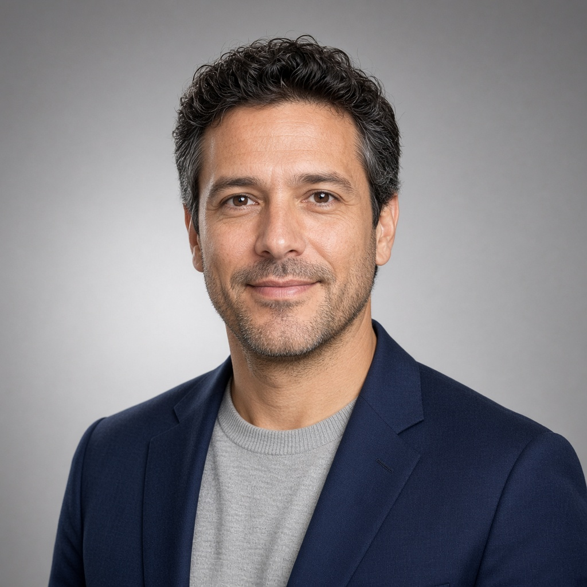

EL EQUIPO
Las personas detrás del método.
Cuatro trayectorias distintas. Una misma mentalidad: entrar en la operación, entender el negocio desde adentro y construir el cambio junto a quienes lo hacen posible. Desarrollamos un método para resolver problemas complejos, acelerar la transformación y convertir dirección en movimiento.
Hugo Benítez
Inés Castro
Autenticidad
Trabajamos como somos: con honestidad, criterio y compromiso real. No creemos en soluciones de molde ni en presentaciones recicladas. Cada problema tiene su propia lógica, y resolverlo exige involucrarse con pasión y profundidad.
Cercanía
Trabajamos cerca, con presencia real y compromiso. Nos involucramos en el negocio para entender lo que pasa, acompañar cuando las cosas se complican y construir soluciones de manera directa y transparente.
Humildad
No llegamos con todas las respuestas. Preferimos empezar por escuchar, hacer las preguntas correctas y entender la realidad de cada organización. Nuestro método analítico nos da estructura; la humildad nos permite aplicarlo con criterio.
Ambición y Humilidad
Creemos en la generación fluida de valor. Eso exige soñar en grande y arriesgar cuando necesario, ser intelectualmente honestos para con nosotros y nuestros clientes, ejecutando con disciplina y criterio. La ambición marca la dirección; la honestidad la robustez de los compromisos a largo plazo.
Creemos que los negocios que tienen una historia y propósito propio son emocionantes. Por eso nos involucramos de verdad. En cada proyecto, con cada equipo, desde el primer día.
¿Querés conocernos antes de decidir?
Concertar una charla